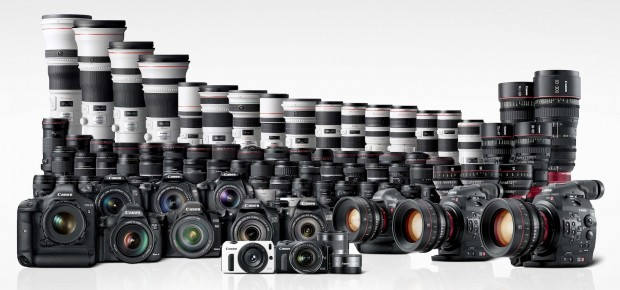
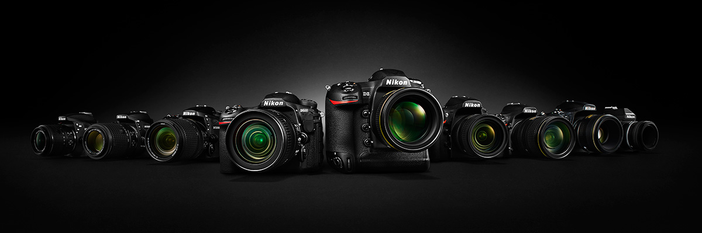
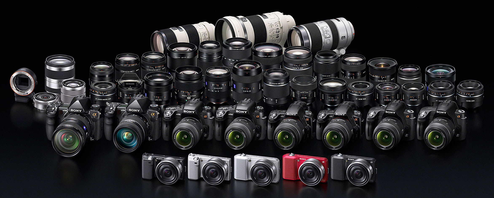
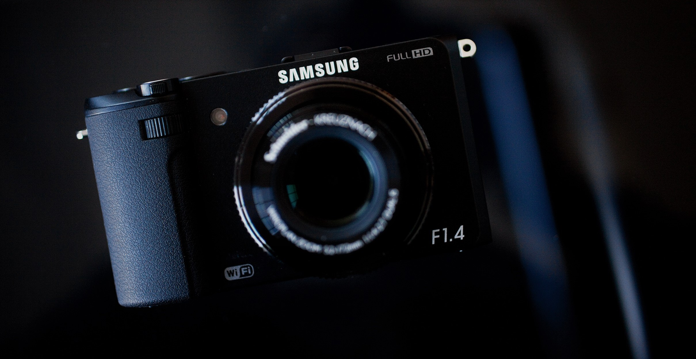
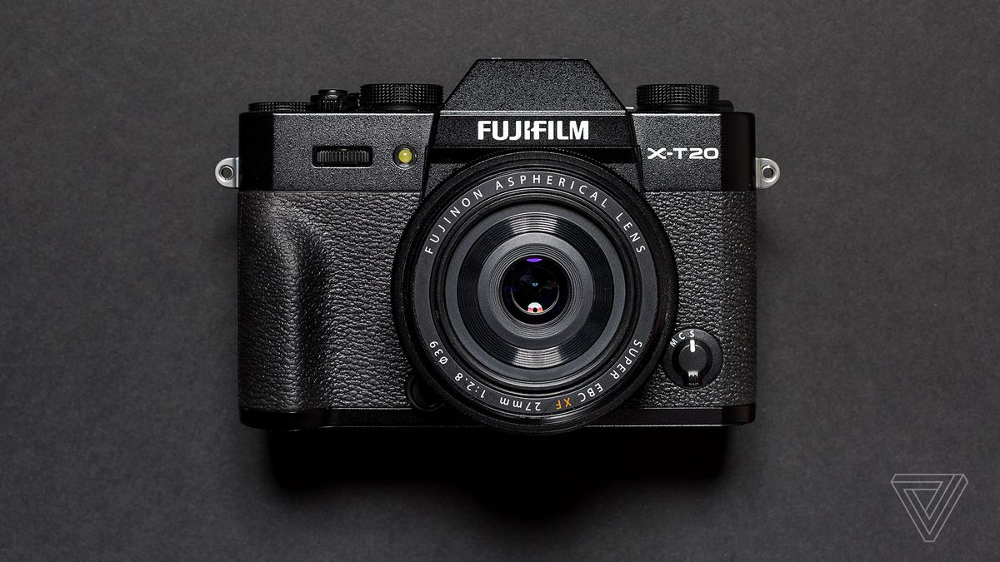

This page talke about kind of cameras and the most famous company .
| Company | links to go down | links for company site |
|---|---|---|
| Canon | Go down | Canon site |
| Nikon | Go down | Nikon site |
| Sony | Go down | Sony site |
| Samsung | Go down | Samsung site |
| Fujifilm | Go down | Fujifilm site |

The History of Canon
1933 - 1961
Canon began with the establishment of Precision Optical Instruments Laboratory in 1933, Founded August 10, 1937, Tokyo, Japan
1962 - 1975
In 1962, Canon developed its first five-year plan in preparation for full-fledged entry into the business machine market
1976 - 1987
In 1976, Canon launched its Premier Company Plan with the aim of becoming an excellent global company
1988 - 1995
In 1988, Canon announced its second inauguration with the launch of the First Global Corporation Plan
1996 -2018
In 1996, Canon’s innovation activities began with the launch of the Excellent Global Corporation Plan
The canon Founders
- Takeshi Mitarai
- Takeo Maeda
sum of Canon's products
- Cameras
- Lenses
- Portable flash
- Computers
- Printers
- Steppers for IC and LCD fabrication
- Calculators
- Presenters
- Accessories

Nikon Corporation was established on 25 July 1917 when three leading optical manufacturers merged to form a comprehensive,
fully integrated optical company known as Nippon Kōgaku Tōkyō K.K.
Over the next sixty years,
this growing company became a manufacturer of optical lenses (including those for the first Canon cameras) and equipment used in
cameras, binoculars,
microscopes and inspection equipment.
During World War II the company operated thirty factories with 2,000 employees,
manufacturing binoculars, lenses, bomb sights, and periscopes for the Japanese military.
Full Name : Nikon Corporation
Founded : 1917
Founder : Koyata Iwasaki
CEO : Makoto Kimura
Industry : Manufacturing
Sector : Public
Country : Japan
Website :https://www.nikon.com/

Sony Corporation is a Japanese multinational conglomerate corporation headquartered in Kōnan, Minato, Tokyo.
Its diversified business includes consumer and professional electronics, gaming, entertainment and financial services.
Founded : 1946
Country : Tokyo , Japan
CEO : Kenichiro Yoshida (Apr 1, 2018–)
Headquarters : Minato, Tokyo, Japan
Founders: Akio Morita , Masaru Ibuka
Website :https://www.sony.com/
*sum of sony's products*
- Televisions & Home Theater
- Audio
- Cameras
- Mobile, Accessories & Smart Devices
- Video Cameras
- Car & Marine
- Energy, Storage & Cables
- PlayStation

n 1938, Lee Byung-chul (1910–1987) of a large landowning family in the Uiryeong county moved to nearby Daegu city and founded Samsung Sanghoe .
Samsung started out as a small trading company with forty employees located in Su-dong (now Ingyo-dong).[18] It dealt in dried-fish,[18] locally-grown groceries and noodles.
The company prospered and Lee moved its head office to Seoul in 1947. When the Korean War broke out, he was forced to leave Seoul. He started a sugar refinery in Busan named Cheil Jedang.
In 1954, Lee founded Cheil Mojik and built the plant in Chimsan-dong, Daegu. It was the largest woollen mill ever in the country.
sum of samsung's products
- Cameras
- Lenses
- Portable flash
- Computers
- Printers
- Steppers for IC and LCD fabrication
- Calculators
- mobile phone
- Accessories

Fuji Photo Film Co., Ltd. was established in 1934 with the aim of being the first Japanese producer of photographic films. Over the following 10 years,
the company produced photographic films, motion-picture films and X-ray films. In the 1940s, Fuji Photo entered the optical glasses, lenses and equipment markets.
After the Second World War, Fuji Photo diversified, penetrating the medical (X-ray diagnosis), printing, electronic imaging and magnetic materials fields. In 1962,
Fuji Photo and U.K.-based Rank Xerox Limited (now Xerox Limited) launched Fuji Xerox Co., Ltd. through a joint venture.